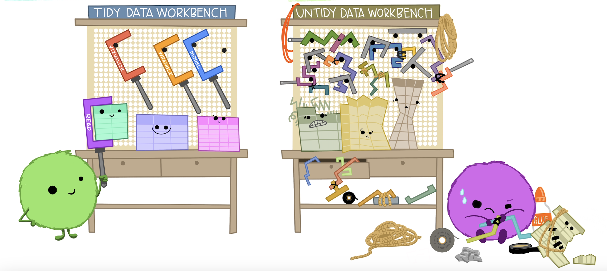
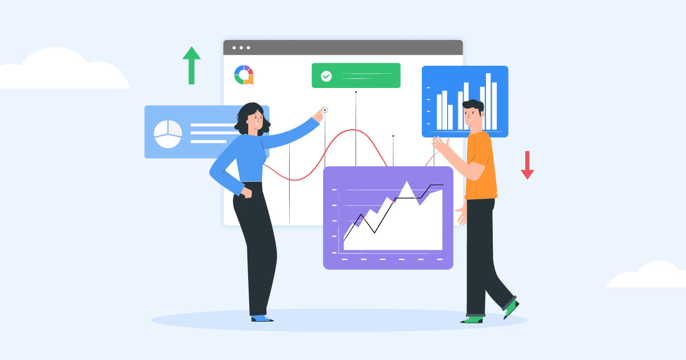

Data Science in the Real World
Introduction
One of my favorite things about going to college at Brigham Young University-Idaho is the emphasis on real-world experience. Courses and faculty aim to simulate this in a classroom through various project and hands-on experiences. Despite some amazing in-class lessons learned and knowledge gained, I have found that the most valuable experiences I’ve had in the data science realm came from working as a student on campus.
Background
At the beginning of my very first semester here at BYU-Idaho, I was hired as a student office assistant in the Executive Office. At the time, the position was all about writing and editing, although I was exposed to some data manipulation and management.
As the years have progressed, however, I have been tasked with more and more data-related assignments and been given amazing opportunities to work closely with members of the university’s data team. Now, my primary role in the office is anything and everything data-related, including donations to the university and student scholarships.
Lessons Learned
While my coursework gave me a solid foundation in data science concepts, working in a real-world environment introduced challenges and insights I never encountered in a classroom. From handling messy, real-world data to communicating insights with non-technical decision-makers, my student employment has given me a clearer picture of what it truly means to work in data science.
Real World Data
In nearly every data science class I’ve taken, my teachers emphasized the importance of tidy data: each variable in its own column, each observation in its own row, and each value in its own cell.

Many of my professors attempted to challenge us with untidy data sets and give us practice wrangling them into a tidy form. Even when we were given “untidy” data, it was fairly simple to convert it into a workable table.
The main source of data I work with in the Executive Office is automatically generated in a PowerBI report. At first glance, these reports are set up pretty well: each row is a donation to the university and each column stores a specific variable about that donation.
The more I’ve worked with the data and the further I’ve pushed it, the more flaws I’ve discovered. Not only are there many columns and cells that contain multiple values, there are some painful discrepencies and little uniformity between donation records for the same individuals.
I love this image, as I feel it accurately represents how I’ve felt working with this data over the past two years (I’m the purple fluffball, in case there was any confusion).

So, how can you get past this? How did I get past it? I’ve learned to accept that there are just some things I won’t be able to get perfect. With messy data like this, especially when it’s hundreds of thousands of rows long, you have to be okay with good enough. Now, that’s not by any means an excuse to be lazy or not produce good work. It just means that you must do everything in your power to overcome the mess, get the data in a useful (not perfect) form, and then get your report done and move on to the next thing.
When you’re in a real-world environment, you often don’t have two weeks to mess with your data and take your time to reach perfection. That’s why it’s so important to be familiar with the data your company gives you and to know how to quickly become familiar with any new datasets. The executives asking for your analysis care much more about the practical application and steps you recommend than the specific numbers and data. Make sure to not let perfectionism get in the way of producing useful information.
Communicating Results
In your data science classes, every time you present or submit an assignment to a professor, you are talking to other data scientists. Honestly, the only reason they are looking at your report is to see whether it’s accurate: whether the code was written well and the visuals look presentable. If you’re like me, you go into the presentation thinking only about how they are going to judge the work you did. Because they know exactly how to do what you do, but they could do it way better!
Presenting to non-technical executives in a work environment is completely different. Quite frankly, it’s a major shift that I am still getting used to. I remember the first time I presented a report to the president of the university. I was nervous. I rushed through the slides, only to be interrupted with questions about the data and findings. It was a wake-up call! I realized my audience wasn’t looking to critique the work, but rather to understand the insights and how they could be applied.

At the end of our meeting, he said something along the lines of how good information leads to better decision making. Unlike my professors, his goal in seeing my work wasn’t to judge me; he automatically trusted in the information I was presenting and wanted my insights into how to use it moving forward.
This was not something I had every experienced as a student before. It was humbling to have someone in a much higher position than myself automatically believe in the work I had done. It also opened my eyes to the importance of carefully reviewing my own work. When you don’t have people constantly looking over your shoulder, you have to solidify your own process for quality control.
Conclusion
Working as a student employee has given me insights into data science that no classroom could fully prepare me for. From wrangling messy, real-world data to effectively communicating insights with decision-makers, I’ve learned that technical skills are only part of the equation. The ability to adapt, prioritize efficiency over perfection, and present findings in a clear, actionable way is just as crucial.
This experience has reinforced that data science isn’t just about numbers—it’s about solving problems and driving informed decisions. While my coursework provided the foundation, my student employment has shown me what it truly means to apply data science in a professional setting.